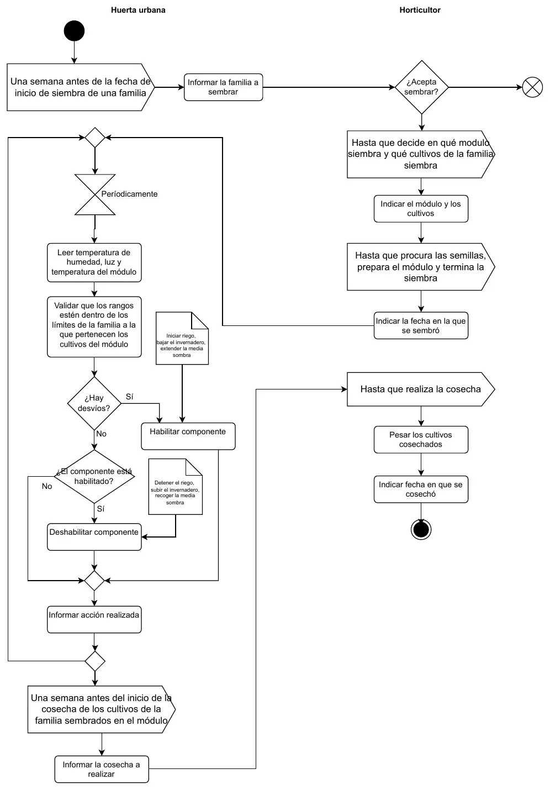

TP integrador: proceso de negocio principal
TP integrador
Enunciado


Propuesta de respuesta
Respuesta no verificada. La propuso Luta Studios con inteligencia artificial y ningún docente la revisó. Puede tener errores.
El proceso tiene dos carriles, la huerta urbana y el Horticultor. Leído como los pasos de un caso de uso, cada actividad en la que un actor ingresa algo o el sistema le informa algo es un flujo. Las que quedan adentro, como habilitar o deshabilitar un componente, son respuestas internas. La Unidad de Control también es un actor, según la lista del enunciado, así que lo que informa entra como flujo.
| Actividad del proceso | Flujo | Actor |
|---|---|---|
| Informar la familia a sembrar | s: avisoSiembra | Horticultor |
| Indicar el módulo y los cultivos | e: siembra | Horticultor |
| Indicar la fecha en la que se sembró | e: confirmaciónSiembra | Horticultor |
| Leer humedad, luz y temperatura del módulo | e: lecturasMódulo | Unidad de Control |
| Informar acción realizada | e: acciónRealizada y s: notificaciónDesvío | Unidad de Control y Horticultor |
| Informar la cosecha a realizar | s: avisoCosecha | Horticultor |
| Pesar los cultivos e indicar la fecha en que se cosechó | e: cosecha | Horticultor |
Uso la notación de la clase 1. e: y s: marcan entrada y salida, (e) una estructura, y después del ; van el tipo y los valores de un discreto.
s: avisoSiembra = familia(e) + fechaDesde + fechaHasta + 1{cultivo(e)}n
familia(e) = códigoFamilia + nombreFamilia
cultivo(e) = códigoCultivo + nombreCultivo + foto + descripciónBreve
e: siembra = nroMódulo + códigoFamilia + 1{códigoCultivo}n
e: confirmaciónSiembra = nroMódulo + fechaSiembra
e: lecturasMódulo = nroMódulo + 3{lectura(e)}3
lectura(e) = fechaHora + sensor + valorLeído + desvío
sensor = char(11); [humedad | temperatura | luz]
e: acciónRealizada = nroMódulo + fechaHora + acción + componente + resultado
acción = char(9); [abrir | desplegar | enrollar | cerrar]
componente = char(12); [riego | invernadero | media sombra]
resultado = char(7); [éxito | fracaso]
s: notificaciónDesvío = nroMódulo + lectura(e) + acción + componente + resultado
s: avisoCosecha = nroMódulo + fechaEstimadaCosecha + 1{nombreCultivo}n
e: cosecha = nroMódulo + fechaRealCosecha + 1{códigoCultivo + kilosCosechados}n- El aviso de siembra. Sale una semana antes del inicio de la ventana. Según la regla 9, la ventana va del día 10 del mes menos la ventana de la familia al día 10 más la ventana. Con una ventana de 5 días en marzo de 2026 va del 05/03 al 15/03, y el aviso sale el 26/02.
- La siembra. Todos los cultivos tienen que ser de la familia elegida (regla 7), y un módulo en siembra tiene un solo Horticultor (regla 6). El Horticultor puede no aceptar, y ahí el proceso termina sin flujo de entrada.
- Las lecturas. La regla 11a pide fecha y hora con minuto y segundo, sensor, valor leído y desvío, que puede ser positivo o negativo. Cada pasada del proceso lee los tres sensores, por eso
3{lectura(e)}3. - Las acciones. Las notas del diagrama dicen qué hace cada componente. Habilitar es iniciar el riego, bajar el invernadero o extender la media sombra, y deshabilitar es lo contrario. La lista de actores las nombra como abrir, desplegar, enrollar y cerrar, que son los valores de
acción. Lo que la lista llama «estado», la regla 11b lo llama «resultado (éxito o fracaso)». - La notificación (regla 11c) lleva el desvío, la acción correctiva y su resultado.
- La cosecha.
fechaEstimadaCosechaes calculada, la fecha de siembra más los días que la familia necesita para estar lista (regla 8). La fecha real y los kilos por cultivo salen de la regla 11d.
El reporte de la regla 11e y el mantenimiento de familias y cultivos no están en este proceso. Van en el resto del TP.
Respuesta no verificada. Puede tener errores.
Se armó con Enunciado del TP (lista de actores y reglas 6 a 11), y del Final, Del caso de uso al diccionario, Notación e Información adicional.
Quedó en duda: El diagrama pone «Validar que los rangos estén dentro de los límites» en el carril de la huerta, pero la lista de actores dice que controlar y detectar desvíos queda fuera del alcance. Seguí la regla 11a, que dice que el desvío lo informa la Unidad de Control. Si cada sensor se informa por separado, la lectura es 1{lectura(e)}1. La regla 11c deja afuera las notificaciones de fallo, así que el resultado de la notificación podría ser siempre éxito. Qué acción corresponde a cada componente lo deduje de las notas del diagrama.